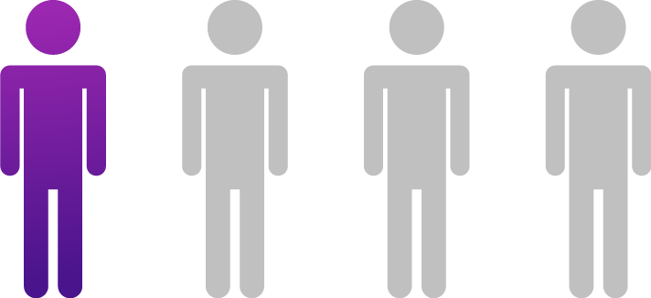

Tiene como fin educar y sensibilizar a las
poblaciones vulnerables frente al cáncer de mama,
por medio de conferencias educativas acerca del
autocuidado, el autoexamen y la importancia de su
constante práctica.
“El cáncer de mama es el más común entre las mujeres en todo el
mundo, y está aumentando especialmente en los países en
desarrollo, donde la mayoría de los casos se diagnostican en fases
avanzadas”. (OMS, 2020).
La probabilidad de que una mujer
colombiana desarrolle cáncer de seno es
En Colombia, cada año
aparecen aproximadamente
nuevos
casos
Recuerda siempre apostarle al autocuidado, tener control
de sí mismo/a, responsabilidad y pensar en los demás.
El autoexamen de seno es la clave de la detección temprana,
detectarlo a tiempo puede salvar tu vida.
Pasos para realizarte el autoexamen mensualmente, de cinco a seis
días después de cada menstruación. En el caso de los hombre un
día al mes.
paso 1
Frente a un espejo observo los senos. Con la mano derecha palpo
el seno izquierdo y con la mano izquierda el seno derecho.
paso 2
Se palpa el seno de 12 a 12 como las agujas del reloj, de dentro a
fuera. Pezón de arriba abajo y de lado a lado, oprimiendo
suavemente, descartando secreciones.
paso 3
Palpar axilas donde no se deben sentir nódulos.
El autoexamen de seno es el primer paso para
detectar protuberancias o secreciones que den indicio
de la enfermedad.
A través de este programa se busca generar
espacios de educación y sensibilización acerca del
VIH en las comunidades vulnerables, por medio de
conferencias informativas se resalta la importancia
de una salud sexual y reproductiva responsable.
Más de 55 mil personas en Colombia no saben que tienen VIH.
Expertos hacen un llamado a las autoridades para incrementar
esfuerzos en diagnóstico y prevención.
De las 150
mil
personas
que viven con esta
enfermedad según la Cuenta
de Alto Costo, tan solo el
63%
ha sido
diagnosticado
Se calcula que la epidemia
puede estar creciendo entre un
casos corresponden a jóvenes entre los 15 y 24 años.
De acuerdo con la Organización Panamericana de la Salud,
en países como Colombia la asignación de recursos
para la atención de la epidemia del VIH se concentra un 79%
en tratamiento y solo un 15% en prevención
Contamos con un grupo de apoyo, donde se
reúnen mensualmente beneficiarios que viven con
cáncer y VIH, un espacio para el fortalecimiento del
ser, la recreación, la educación y el emprendimiento.
Desarrollamos brigadas de salud, dirigidas a población
vulnerable, las cuales tienen poco acceso a los sistemas de
salud, brindando atención médica general, pediátrica,
servicio de odontología, entrega de medicamentos,
actividades recreativas, donaciones entre otros.
Esto se hace posible gracias a tus donaciones, en conjunto
con las entidades públicas, privadas y la acción comunal.
personas entre niños,
jóvenes y adultos
se han beneficiado con
nuestras jornadas de salud.
Estos programas hacen parte de la
fundación que se financia con la
compra de las capsulitas en:
Para conocer más acerca de nuestra labor
www.fundacioncopservir.org
Para conocer más acerca de nuestra labor
www.fundacioncopservir.org
Fuentes: www.caracol.com.co - www.minsalud.gov.co - www.especiales.semana.com - www.paho.org - www.fundacioncopservir.org